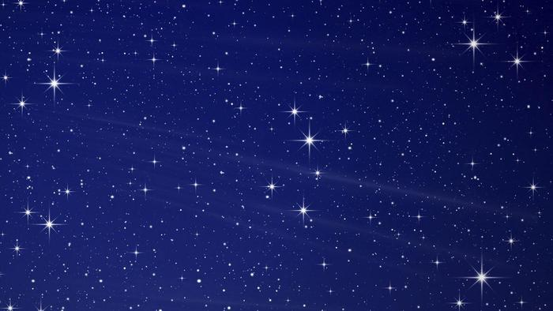

|
|
YILDIZLAR GECELERİ NEDEN YANIP SÖNER? Gökyüzüne baktığımızda yıldızları ve gezegenleri ayırt edebiliriz. Yıldızlar yanıp söner; ancak gezegenler yanıp sönmez. Yıldızlar, gezegenler, hatta Güneş ve Ay bile değişik miktarda da olsa yanıp söner. Yani atmosfer dışında konumlanmış her şey yanıp söner. “Yanıp sönme” sözcük öbeğini astronomik terim “astronomik ışıldama/parlama” olarak ifade edilebilir. Her ne kadar yaşamak için atmosfere ihtiyaç duysalar da astronomi bilimi, bilim sahnesinde kendisine yer edindiği günden beri astronomların en büyük sorunu gökyüzündeki cisimlerin görüntülenmesini engelleyen atmosfer ve atmosferik türbülans olmuştur. Neden mi? Çünkü atmosfer, gözlem esnasında gökyüzünden görüntü alınırken bulanıklığa neden olmakla kalmaz bir de hava partikülleri görüntünün arka planında kirliliğe neden olur. Yıldızların yanıp söner gibi görünmesinin de nedeni atmosferdir. Bir yıldızın ışığı atmosferden geçerken hava ısısındaki değişikliklerden dolayı kırılır. Bu da dünyadan bakıldığında ışığın yanıp sönüyormuş gibi görünmesine neden olur. Oysa aynı gözlem uzaydan yapılsa ışık sabit kalır. Yıldızlar yanıp söner gibi görünürken gezegenlerin öyle görünmemesinin nedeni ise hem yıldızlara kıyasla dünyaya daha yakın olmaları hem de atmosferik koşullardan yıldızların ışığı kadar etkilenmiyor olmalarıdır. Astronomlar, atmosferik türbülans ile iki şekilde mücadele eder. 1.Gözlemleri atmosferin üstünden yaparak Hubble Uzay Teleskobu, atmosferin dışında konumlandırılmış, atmosferin olumsuz etkilerinden (görüntüde bulanıklık ve partiküllerin oluşturduğu arka plan kirliliği vb.) bağımsız görüntü alınabilmesini sağlayan bir uzay teleskobu. Hubble, milyarlarca ışık yılı uzaklıktaki galaksileri atmosferik kırınımlar olmadan çözümleyebilir. 2.Atmosferik türbülansın neden olduğu sapmaların etkisini azaltarak Kullanılan teleskopların çoğunda atmosferin neden olduğu kırınımları yansıtarak etkisini azaltmayı hedefleyen uyarlanabilir optikler kullanılır. Astronomlar kendi gözlem alanları içerisinde yapay bir yıldız yaratarak gökyüzüne güçlü bir lazer yansıtır. Çünkü yapay yıldızın nasıl göründüğünü bilirler, böylece atmosferin neden olduğu kırınımların etkisini teleskopta ayırt edebilirler. Her ne kadar bu yöntem uzaya bir teleskop yerleştirmek kadar iyi bir yöntem olmasa da daha ucuzdur. |
||
| © 2017 nekibu - Designed by Osman Koç |

|